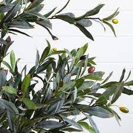

The scientific name for olive is Olea europaea. It is an evergreen, perennial tree that grows in subtropical regions. Its fruits and oil are essential elements in the diet of those living in the Mediterranean regions. This tree has been known and glorified for thousands of years. It was planted on the island of Crete and ate its fruits in the year 3500 BC. Semitic peoples cultivated it since the year 3000 BC. While the most important crop for the Romans in the year 600 BC. Later, olive cultivation spread in the areas surrounding the Mediterranean basin until the plant was taken as an ornamental plant only in some areas where olive production is not suitable at all or in non-commercial quantities. The tree grows to a height of 3 to 12 meters or more. What distinguishes it is that its leaves are dark green on top and gray on the bottom, which gives a contrast in color that increases its beauty. Its wood is rot-resistant and has multiple uses in making wooden utensils, swimming pools, and more. The plant has the ability to grow from the roots of the stem when the original plant dies. The olive tree does not begin to produce until the age of 4 to 8 years, and the full production is at the age of 15 to 20 years.